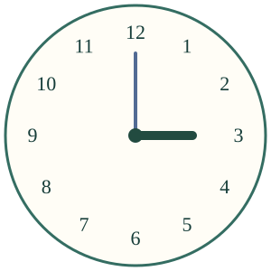
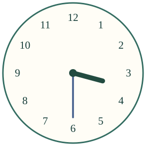

<link rel="stylesheet" href="lesson.css">
<section data-clock-lesson>

<section data-teaching-step="1" data-lesson-role="teaching-step" data-audience-coupled>
<div class="clock-intro"><div><h2>Milloin lähdetään?</h2><p>Aava lähtee kolmelta. Katso puoli tuntia eteenpäin.</p></div></div>
<button type="button" data-clock-step>Puoli tuntia eteenpäin</button>
<div data-clock-live><p>Kello kolme eli3.00. Puolen tunnin päästä on3.30 eli puoli neljä.</p></div>


<details data-lesson-role="teaching-step"><summary>Toista liike tai vaihda lähtöaikaa</summary><p>Nopeutettu malli: toiston noin 6 sekuntia näyttää yhden tunnin. Oikea tunti ei kulu näin nopeasti.</p><label>Lähtötunti<select data-clock-start><option value="3">3</option><option value="9">9</option><option value="12">12</option></select></label><button type="button" data-clock-play>Toista nopeutettuna</button><button type="button" data-clock-stop>Pysäytä</button><button type="button" data-clock-rewind>Alkuun</button></details>
</section>

<nav aria-label="Oppitunnin kohdat" data-lesson-role="metadata"><a href="#kello-miksi">Viisarit</a> · <a href="#kello-kokeile">Kokeile</a> · <a href="#kello-lopuksi">Lopuksi</a></nav>

<section id="kello-miksi"><section data-teaching-step="3-1" data-lesson-role="teaching-step"><h3>Kaksi viisaria yhdessä</h3><p>Lyhyt, paksu <strong>tuntiviisari</strong> näyttää tunnin. Pitkä, ohut <strong>minuuttiviisari</strong> näyttää minuutit. Väri auttaa katsomaan, mutta viisarin pituuskin erottaa ne.</p><p><strong>Kello kolme:</strong> lyhyt viisari on3:ssa ja pitkä12:ssa. Kirjoitamme 3.00.</p><p><strong>Puoli neljä:</strong> pitkä viisari on 6:ssa. Lyhyt on 3:n ja 4:n puolivälissä. Neljään on vielä puoli tuntia. Kirjoitamme 3.30.</p><figure data-lesson-role="worked-example"></figure></section>
<section data-teaching-step="3-2" data-lesson-role="question"><p data-lesson-role="question"><strong>Ennusta:</strong> pysyykö lyhyt viisari kolmosessa, kun puoli tuntia kuluu?</p><details data-lesson-role="answer"><summary>Katso vastaus</summary><p>Ei. Molemmat viisarit liikkuvat. Lyhyt kulkee hitaasti kolmosesta kohti nelosta.</p></details><p>Toinen esimerkki: 9.30 on <strong>puoli kymmenen</strong>. Puoli nimeää aina seuraavan tasatunnin. Se ei ole 9.00 eikä 10.00.</p></section></section>


<section id="kello-kokeile"><section data-teaching-step="4-1" data-lesson-role="teaching-step"><h3>Lue kello</h3><label>Vaihda kelloa<select data-clock-case><option value="0">Kello 1</option><option value="1">Kello 2</option><option value="2">Kello 3</option><option value="3">Kello 4</option></select></label><div data-clock-practice-image></div><p>Mitä tämä kello näyttää?</p><div class="clock-answers"><button type="button" data-clock-answer="4:0">neljä ·4.00</button><button type="button" data-clock-answer="7:30">puoli kahdeksan ·7.30</button><button type="button" data-clock-answer="12:30">puoli yksi ·12.30</button><button type="button" data-clock-answer="9:0">yhdeksän ·9.00</button></div><p data-clock-feedback aria-live="polite">Tarkista, kun olet valmis.</p><details data-lesson-role="hint"><summary>Tarvitsen vihjeen</summary><p>Pitkä ylhäällä: tasatunti. Pitkä alhaalla: puoli tuntia. Katso, minkä luvun lyhyt viisari on juuri ohittanut.</p></details></section>
<section data-teaching-step="4-2" data-lesson-role="teaching-step"><h3>Auta Aavaa lähtemään</h3><p>Retki alkaa <strong>puoli kuusi</strong>. Aseta lähtökello.</p><div class="clock-settings"><label>Tunti<select data-clock-set-hour><option value="3">3</option><option value="4">4</option><option value="5">5</option><option value="6">6</option><option value="12">12</option></select></label><label>Minuutit<select data-clock-set-minute><option value="0">00</option><option value="30">30</option></select></label></div><div data-clock-set-image></div><button type="button" data-clock-set-check>Tarkista lähtökello</button><p data-clock-set-feedback aria-live="polite">Tarkista, kun olet valmis.</p></section></section>


<section data-teaching-step="5" data-lesson-role="teaching-step">
<details data-lesson-role="teaching-step"><summary>Lisäkokeilu</summary><p>Kokeile lähtötuntia 12. Puoli tuntia sen jälkeen on 12.30 eli puoli yksi. Seuraava tasatunti on 1. Sama kellotaulu toistuu kahdesti vuorokaudessa; aamun ja illan eroa ei voi päätellä pelkistä viisareista.</p></details>
</section>

<details data-lesson-role="teacher-note"><summary>Opettajalle ja ilman ruutua</summary><p>Vuosiluokat 1–2. Esitiedot: keston vertailu M-TIME-01 ja lukujen järjestys M-NUM-07. Tässä opetetaan tasatuntia ja puolta tuntia, ei kaikkia minuuttilukemia,24 tunnin järjestelmää tai aikavälien laskemista. Nopeutettu toisto havainnollistaa sidottuja viisareita; sen nopeus ei mittaa oikeaa aikaa. Puoli neljä tarkoittaa suomeksi3.30; englannin half past -nimitystä ei siirretä sellaisenaan.</p><p>Paperikellossa siirtäkää molempia viisareita yhdessä. Näytä 3.00,3.30 ja4.00. Pyydä lasta osoittamaan, mihin retken lähtöaikaan viisarit asettuvat. Ohjatun valinnan tai palautteen jälkeen saatu vastaus ei osoita itsenäistä, pysyvää hallintaa. Tässä ei tallenneta henkilöhistoriaa. Neljä lukukelloa ja lähtöajan asetus ovat matalan kynnyksen harjoittelua, eivät koko kellonlukutaidon arviointi.</p></details>

<section data-teaching-step="6" data-lesson-role="teaching-step">
<p id="kello-lopuksi" data-lesson-role="question"><strong>Lopuksi:</strong> mihin lyhyt viisari osoittaa, kun kello on puoli neljä?</p>
</section>

<noscript data-lesson-role="metadata"><p>Ilman JavaScriptiä vertaa kahta kellokuvaa ja siirrä paperikellon molempia viisareita. Vuorovaikutteiset harjoitukset tarvitsevat JavaScriptin.</p></noscript>
</section>
